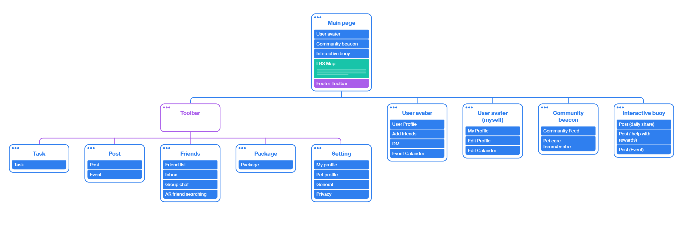
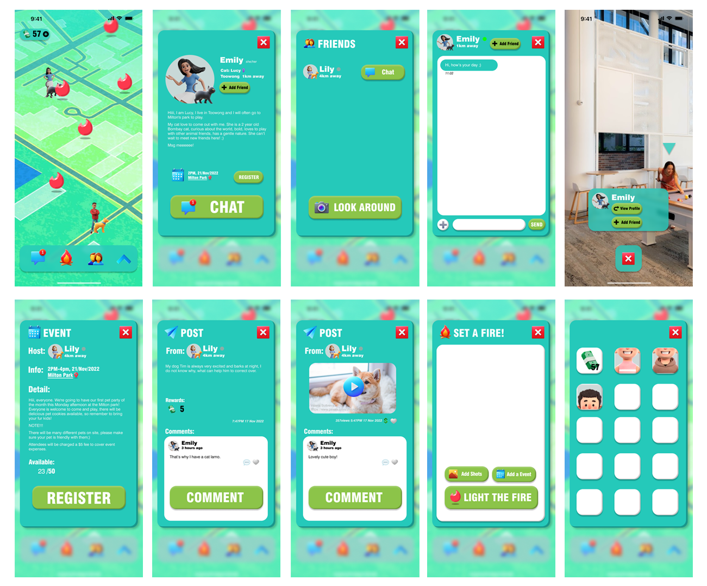
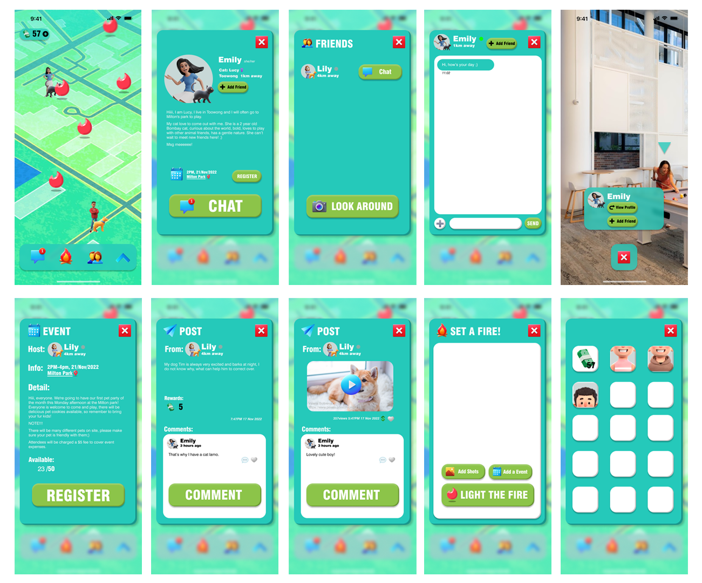
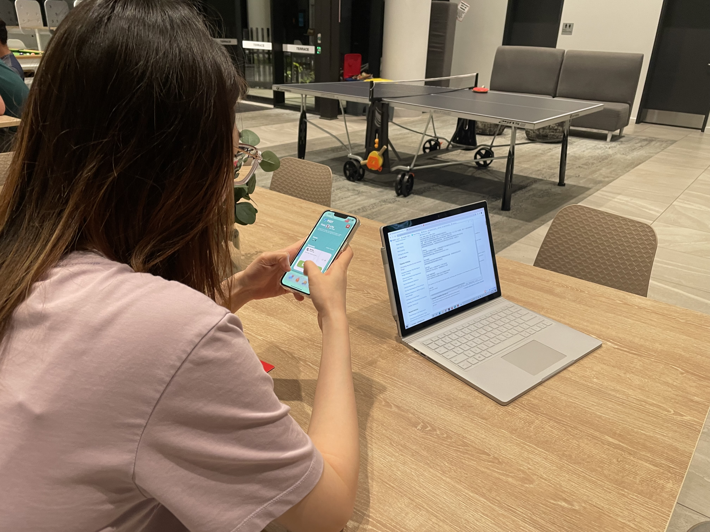
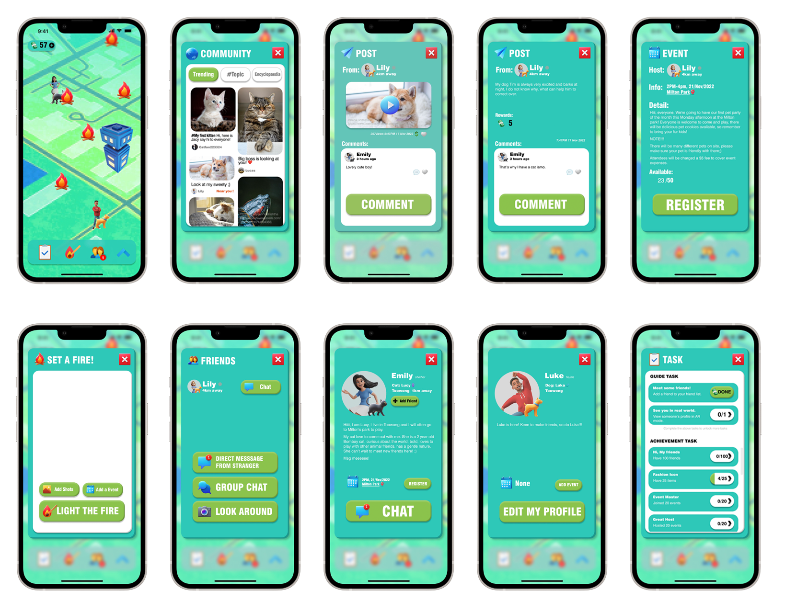

Pet GO
PetGO empowers users to connect and create lasting relationships with like-minded individuals who share their passion for pets.
Tool used: Figma
Duration: 11th November - 18th November 2022 as part of Course Advanced Human-Computer Interaction at UQ Try the prototype

The background
PetGO was independently developed as a follow-up solution to the team project Ouah Ouah Friends .
Based on
the issues related to user experience and community development that we identified in the pet community
through Ouah Ouah Friends,
I proposed my own design solution.
.
Based on
the issues related to user experience and community development that we identified in the pet community
through Ouah Ouah Friends,
I proposed my own design solution.
- Lack of motivation to join the pet community.
- Uncontrolled environment in the pet community.
- The quality of information within the community cannot be guaranteed.
Problem Space
UX Design
Probelm Statement
A solution that can facilitate the target audience to join or help them form and maintain a pet community. The answer should also effectively sustain the community's environment and information quality.Funtion description
The solution is Pet GO, an AR social metaverse based on location-based service. With the mobile app, users can easily connect with other pet owners in the virtual world, chat and make new friends. Users can access a wealth of information about pets and the community. Users can create posts and host activities based on location in the app, building a real-world network that helps pet owners in the local area more easily participate in community.
Users can open the camera using AR to access users & their pet
profiles for quick offline dating information sharing. By quickly connecting people in physical
locations to virtual spaces, PetGO helps users make friends and maintain relationships conveniently
through online networking.
The metaverse also sets up virtual items to build the reward mechanism. Users
can earn virtual items through activities, and the proceeds of virtual goods can support the operating
expenses of the metaverse. Designing a reward mechanism based on gaming principles can help connect the
sense of community participation with the pleasure of playing games, encouraging users to engage in
community interactions actively. Moreover, the mechanism can also help maintain the community
environment and ensure information quality.
Interaction Diagram
Mobile
Interaction Mode
Exploring and browsing
Key Interface Metaphor
-Real World: The Skeuomorphic design brings a sense of reality to the virtual
world, allowing users to perceive the community's connection visually. The design style also helps users
become familiar with the app more quickly, reducing users' sense of unfamiliarity.-Cartoon: The cartoon UI style can give the app a game-like interface, creating a relaxed and entertaining atmosphere for users. It can increase the app's usability and improve the social atmosphere.
Sitemap
After completing the conceptual design, I invited two target users and one expert user to participate in card sorting. Based on the results, I finished the interaction and task flow design. Below is the final version of the sitemap. UI design
Based on the goal of gamified design, the UI adopts a 3D cartoon style, and the interactive elements and icons within the application are also designed with a consistent style.*All third-party art resources used in the project have been licensed.


 Here is the first version mid-fidelity prototype.

Here is the first version mid-fidelity prototype.

User test & Evaluation
Three participants participated in the evaluation. One is a peer with a game interaction design background, one is a potential user, and the other is a potential user interviewed in our research phase. With a medium-fidelity Figma prototype, the two potential users were involved in a think-aloud protocol.
The peer
was engaged in the Heuristics Evaluation
and the think-aloud protocol.

For the design purpose of the app, gamification design is used to attract potential users to join the
community and allow them to have long-term support from the community. All three
users think that the app's
gamification is sufficient and it's helpful to achieve this goal. Both potential users said they
were
motivated to join the game and keep playing it. They believed the game was relaxing and not heavily
addictive, and they were delighted to see this.
For usability, professional users said, "clear hierarchy, consistent and high
aesthetic UI design", but
she also said there could be a task system in the apt to give the user more guidance and a sense of
achievement in the game . She also believes the AR system could be very good at discovering
the
connections between existing networks and the pet community. Both potential users say the app is easy to
use. They thought the flame metaphor was not intuitive, but it was easy to understand its meaning as
long as they tried. Moreover, they thought dressing up in avatars was attractive, and the rewards
mechanism successfully caught them.
For the privacy issue, all three testers believe that as long as the right of choice is fully open to
and controlled by the user, this will not cause doubts about the use.
From the comprehensive feedback
analysis, the current app functions have achieved the design purpose.
There is room for improvement in
details, such as Match between the system and the real world. Suggested functions in the evaluation may
better increase the role of the app in enhancing the community experience.
Midfidelity prototype-Final
 Try the prototype
The above is the design and development process of the PetGO, welcome to click the links to
experience the prototype, or please feel free to browse my other works :)